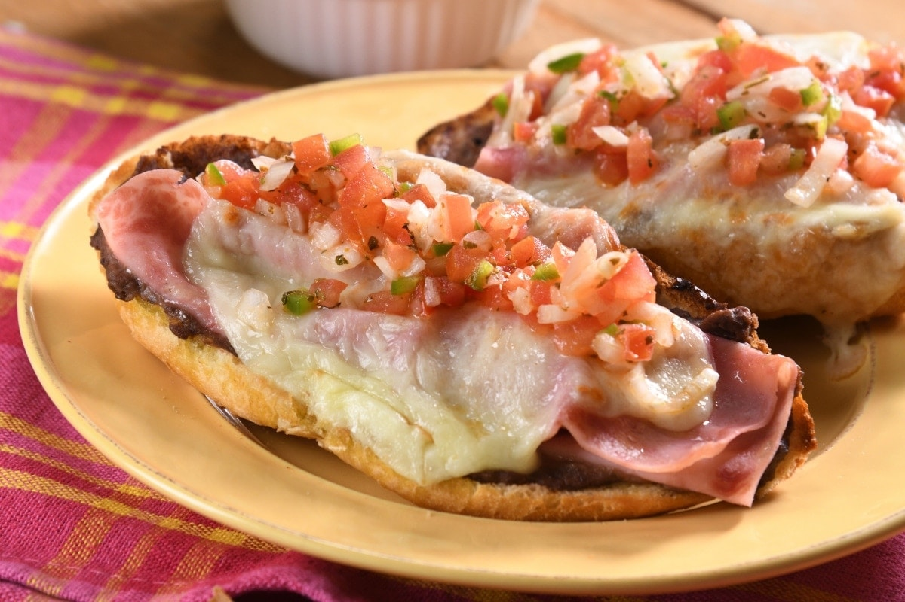

Molletes

Description
No idea what to prepare for dinner? Here are these traditional Mexican molletes to save the day!
Preparing this recipe is easy as ABC and you will only need a few ingredients to indulge your family with some traditional Mexican breakfast!
Ingredients
- 4 bolillo rolls, cut into halves
- 1/4 cups butter
- 1 cup refried beans
- 2 slices turkey deli ham, thinly sliced
- 4 slices Manchego cheese, thinly sliced
- pico de gallo
Steps
- Preheat oven to 356°F.
- On a griddle, toast bolillo rolls with a bit of butter. Remove from griddle and spread refried beans on each bolillo half.
- Place a slice of turkey ham and a slice of Manchego cheese on top. Bake for 5 minutes or until cheese boils.
- Serve traditional Mexican molletes topped with pico de gallo.
Recipe taken from: us.kiwilimon.com